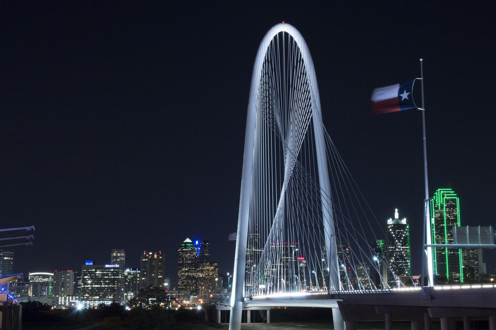
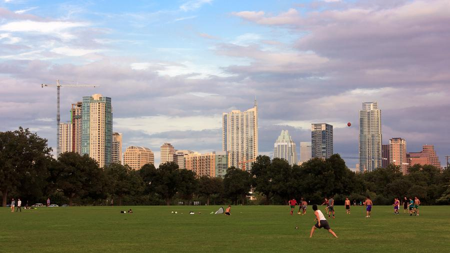
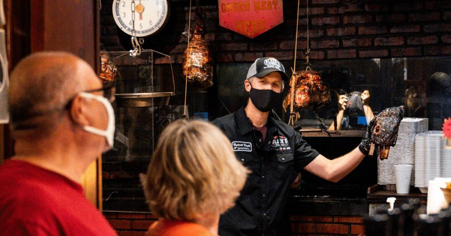
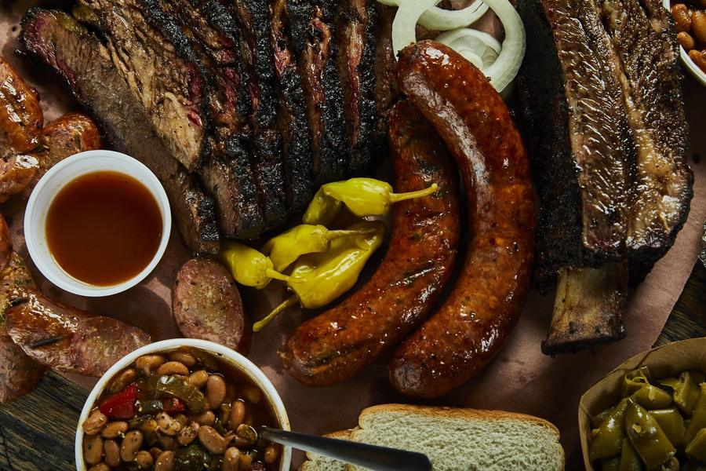
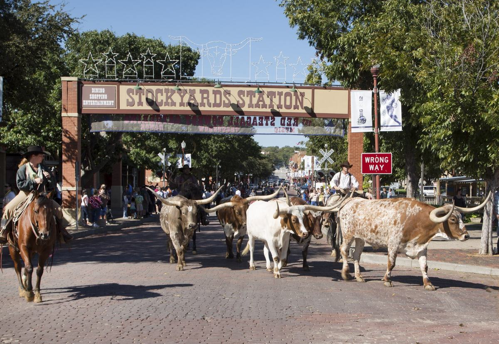

A barbecue weekend for two grown-ups and a small one. Austin or Dallas, lunch and dinner from the pit, a children’s museum, and one very large Warhammer store.

Thu 10 – Sun 13 December 2026 · three nights
Texas, Brisket First
A barbecue weekend for two grown-ups and a small one. Austin or Dallas, lunch and dinner from the pit, a children’s museum, and one very large Warhammer store.
Two cities, one weekend, pick one
Austin or Dallas?
Same dates, same plan shape: fly in Thursday, eat barbecue twice a day, fly home Sunday. Switch between the two cities here; the itinerary, hotels, pits, kids’ places and flights below all change with it.
For the soundtrack, press ♪ Play music in the bottom-right corner. Browsers will not let it start on its own.
Austin
Fly
Burbank nonstop, Southwest, 2h55
Fares
$947 for three, round trip
Stay
JW Marriott Austin, heated rooftop pool
Big pit
Franklin, LeRoy and Lewis, Lockhart day trip
Kids
Thinkery; Trail of Lights (free on Thu, Fri and Sun)
Warhammer
Dragon’s Lair, a big general gaming store
December
about 64°F by day, 43°F at night
Dallas
Fly
Burbank nonstop, Southwest or American, about 3h
Fares
$1,004 to $1,265 for three, round trip
Stay
JW Marriott Dallas Arts District, heated rooftop pool
Big pit
Goldee’s (Michelin star), Pecan Lodge, Cattleack
Kids
Perot Museum; Arboretum lights; the Fort Worth longhorn cattle drive
Warhammer
The Citadel in Grapevine, the largest in North America
Fares: Expedia search for two adults and one child with a seat, nonstop, checked 15 October 2026. Weather: NOAA 1991–2020 December normals.
Austin · Thursday to Sunday
Four days in Austin
Two barbecue meals a day, built around which pits open for dinner. Naps fit after lunch. A rental car with your own car seat makes the Lockhart day possible.

Zilker Park, where the Trail of Lights sets up each December.
Thursday 10 December
Land, then lights
Southwest from Burbank lands at 4:20pm. Pick up the rental car, check in at the JW Marriott, and head to Barton Springs Road.
Lunch
On the plane · the flight leaves Burbank at 11:25am
Dinner
Terry Black’s· open until 9:30pm, free parking, rarely sells out
After dinner, the Trail of Lights in Zilker Park is a few minutes away, and Thursday is a free night. The city and local press list different start times, so check before you go.
With a small one: strollers are allowed on the trail. Parking passes are sold online in advance.
The Thinkery, Austin’s children’s museum, in Mueller.
Friday 11 December
Thinkery, then Franklin
The Thinkery runs Baby Bloomers, an early session for the littlest visitors, on Friday and Saturday mornings from 8 to 10am. Coffee on the way at Figure 8.
Lunch
Franklin Barbecue· opens 11am, sells out around 2 to 3pm; preorder to skip the line
Dinner
KG BBQ· inside Oddwood Brewing, playground and arcade, until 8pm or sold out
Afternoon nap, then Dragon’s Lair on Anderson Lane for the Warhammer fix: a large gaming store with play tables, open until 11pm on Fridays.
With a small one: KG BBQ is the most toddler-friendly pit in Austin. Indoor restrooms, patios and a playground at the brewery.

Black’s Barbecue in Lockhart, open since 1932.
Saturday 12 December
Lockhart, the barbecue capital
Drive about 40 minutes south. Lockhart has four famous pits within a few blocks; pick one for a proper lunch and taste a second.
Lunch
Black’s or Barbs B Q· Black’s opens 10am; Barbs is weekends only and sells out
Dinner
Micklethwait· open until 9pm, air-conditioned dining room and a shaded lawn
LeRoy and Lewis· Michelin star, open from 11am; about 15 minutes from the airport
The only Burbank flight home leaves at 10:35am, which gives up Sunday. To keep the day, fly home into LAX on Southwest at 7:00pm for the same fare. See flights below.
With a small one: an early dinner around 4:30 leaves time to return the car and check the car seat.
Dallas · Thursday to Sunday
Four days around Dallas
The flights that keep both Thursday lunch and all of Sunday are American, Burbank to DFW. Downtown days are walkable from the hotel; Saturday and Sunday need the car.
Hurtado Barbecue· at the Dallas Farmers Market, open 11am to 9pm, big patio
Dinner
Pecan Lodge· Deep Ellum, Thursday until 8pm, full bar
With a small one: Klyde Warren’s fountain only runs when it is warmer than 55°F, and the average December high is about 58°F. The children’s park is there either way.
The Perot Museum, a short walk from the hotel.
Friday 11 December
Perot Museum and the Arboretum at night
Coffee at Weekend Coffee, then the Perot Museum. Its Moody Family Children’s Museum is for ages seven and under. Tickets are timed, so book ahead.
Lunch
Cattleack· Wednesday to Friday 10am to 2pm only, Bib Gourmand; bring your own beer, cards only
Dinner
Smoky Rose· kids’ menu, big patio, takes reservations, near the Arboretum
Nap, then Holiday at the Arboretum after dark (5 to 10pm). 2026 is the last season of the 12 Days of Christmas gazebos.
With a small one: under-twos are free at the Arboretum. The Children’s Adventure Garden only allows strollers with brakes.

The Original Roy Hutchins, Trophy Club.
Saturday 12 December
Meet friends, then the Warhammer Citadel
Drive about 40 minutes northwest to meet friends for lunch. Afterwards, the Warhammer Citadel in Grapevine is about 15 minutes away: the largest Warhammer store in North America, with a cafe.
Lunch
The Original Roy Hutchins BBQ· meet friends here; beef ribs on weekends; free cobbler or banana pudding when you eat in
With a small one: Warhammer stores give free intro activities. Mostly for grown-ups, but the painted armies hold attention.

The Fort Worth Herd on Exchange Avenue. Photo: Carol M. Highsmith, Library of Congress.
Sunday 13 December
Longhorns at 11:30, then Fort Worth barbecue
Drive about 45 minutes west to the Fort Worth Stockyards for the Fort Worth Herd cattle drive. Every day at 11:30am, drovers on horseback walk a herd of real Texas longhorns down East Exchange Avenue. It is free and needs no tickets.
Lunch
Goldee’s· about 25 minutes south of the Stockyards; reserve 5 to 30 lb ahead and pick up without the line (open 11am to 3pm or sold out)
Dinner
Panther City· early, around 4:30; kitchen closes 8pm; covered patio
After lunch, the Fort Worth Museum of Science and History opens at noon on Sundays. DFW is about 40 minutes from Fort Worth; the American flight home leaves at 7:08pm.
With a small one: get there by 11:15 and stand on the sidewalk in front of the Livestock Exchange Building, 131 East Exchange Avenue. The longhorns rest in pens behind that building before and after the drive, so there is time for a close look.
The point of the trip
Barbecue, lunch and dinner
Most of the famous pits are lunch places: they open at 10 or 11 and close when the brisket runs out, often by 2 or 3pm. Dinner barbecue is a shorter list, so the itinerary puts the legends at lunch and the late-opening places at night.
The most famous brisket in Texas, a Michelin Bib Gourmand and Texas Monthly Top 50 joint; lunch only, and a preorder is the toddler-friendly way to do it.
Texas Monthly's #2 joint in the state and a Michelin star, and the best-rated place that serves barbecue at dinner every trip day.
Order Brisket, beef cheeks, cauliflower burnt ends, chori-papas, brisket burger, cheddar cheesecake; dinner-only items after 5pm such as tri-tip and (Thu)…
Line Long - Eater: 'expect to wait over an hour'. Michelin tags it 'Worth Queueing For'.
Beer Full Austin craft list. Draft: ABGB Rocket 100 pils, Brewtorium Electric Lederhosen. Cans: Meanwhile, St.
Thu 11am-9pm · Fri 11am-10pm · Sat 11am-10pm · Sun 11am-9pm
Small one: Michelin lists a car park and terrace; Eater says indoor and patio dining. No sourced info on high chairs.
Lockhart-family barbecue open 10:30am to 9:30-10pm every day, with free parking near Downtown; the safest dinner fallback.
Order Brisket, smoked turkey, mac and cheese, beef and pork ribs. eater.com/maps/best-barbecue-austin-restaurants
Line Medium - Eater: under an hour (line has grown since Michelin listing). FAQ: 'We move fast, especially on the weekends'.
Thu 10:30am-9:30pm · Fri 10:30am-10pm · Sat 10:30am-10pm · Sun 10:30am-9:30pm
⚠ Closed only on Thanksgiving, Christmas Day and the day after Christmas, so no conflict with Dec 10-13.
Small one: Eater calls it an easy, reliable destination for larger groups and families, with indoor and outdoor seating. FAQ: free on-site parking while dining.
Line FAQ: weekday lines average 1-2 hours, weekends 2.5-3 hours. People arrive ~10am weekdays and ~9:30am weekends; for the…
Skip the line Online preorder, $120 minimum, placed 72 hours ahead; pick up at a separate counter.
Beer No alcohol sold. Guests 21+ with ID may bring their own (BYOB), at staff discretion.
Thu 11am-4pm or sold out · Fri 11am-4pm or sold out · Sat 11am-4pm or sold out · Sun 11am-4pm or sold out
Small one: Michelin lists air conditioning, a car park and a terrace. The dining room is small; the FAQ says to ask staff if someone in your group needs a seat before ordering…
A Bib Gourmand smokehouse in a converted church with A/C inside and a shaded lawn, open until 9pm Thu-Sun, which makes it a strong family dinner pick.
Order Brisket, Tex-Czech sausages, beef ribs (Chronicle: Saturday only), green chile-cheese grits, lemon-poppy slaw, potato salad.
Line Medium - Eater: under an hour. The Austin Chronicle says the line usually fits inside the air-conditioned space by the…
Beer A handful of local craft beers, including Zilker Icy Boys lager, plus house frozen lemonade (as of the April 2025…
Thu 11am-9pm · Fri 11am-9pm · Sat 11am-9pm · Sun 11am-9pm
Small one: Indoor seating plus a shaded courtyard under pecan trees; air-conditioned dining room with booths and a lawn with umbrella tables (Chronicle); Michelin notes a crowd…
Texas Monthly Top 50 smokehouse-deli known for its pastrami, air-conditioned with parking; a lunch-only stop.
Order Pastrami sandwich (original or the Rachel), brisket, pastrami, matzo ball soup, smoked turkey salad. eater.com/maps/best-barbecue-austin-restaurants
Line Medium - Eater: under an hour. eater.com/maps/best-barbecue-austin-restaurants
Thu 11am-~3pm (sold out) · Fri 11am-~3pm (sold out) · Sat 11am-~3pm (sold out) · Sun 11am-~3pm (sold out)
Small one: Michelin lists air conditioning, a car park and wheelchair access; Eater says a large, airy space with indoor and outdoor seating. No info on high chairs.
Lockhart's top-ranked current joint; a Saturday or Sunday lunch target only.
Order Molotov/candied pork ribs with lime zest, guajillo-rubbed brisket, beef rib, black-pepper turkey, green spaghetti; Saturday pork stew and Sunday…
Line Michelin: lines can last hours. An owner told Austin360 in Jan 2024 that there 'isn't much of a wait'…
Thu CLOSED · Fri · Sat 11am-sold out (~2-3pm) · Sun 11am-sold out (~2-3pm)
Small one: Michelin lists air conditioning; no pets allowed. No other kid info found.
Most toddler-friendly sit-down BBQ found - kids menu, space, reservations - pairs with the Arboretum.
Order 'Tex-Que' - smoked brisket alongside Tex-Mex like enchiladas.
Line Reservations available.
Beer Bar with drinks menu and Mon-Fri 3-6pm happy hour; specific Texas beers not confirmed.
Thu lunch + dinner · Fri lunch + dinner · Sat lunch + dinner · Sun lunch + dinner
Small one: Has a dedicated Kids menu; large patio with games, fire pits, live music weekends; dog park; valet parking. Visit Dallas pairs it with the Arboretum's children's garden.
8602 Garland Rd, Dallas, TX 75218 · ~13 min from downtown
Under-the-radar Top 50 pick with real dinner hours and short lines.
Order Pork ribs, brisket, house sausages (jalapeno-cheddar, pepperoni-mozzarella); buttermilk and sweet potato pies; sweet potato casserole, mac and cheese.
Line Minimal - all-day hours keep lines short (The Infatuation, Apr 2026).
Thu lunch + dinner · Fri lunch + dinner · Sat lunch + dinner · Sun lunch only
Small one: Small: six indoor tables plus a few on the front patio (The Infatuation). No high-chair info.
6403 S R.L. Thornton Fwy, Dallas, TX 75232 · ~11 min / 8 mi from downtown
The top-ranked joint in DFW and the region's first Michelin star; the trip's 'big one' if you pre-order.
Order Brisket, juicy turkey, pork ribs, pork belly; Laotian sausage and waterfall pork; Sundays-only bread pudding.
Line Very long; Texas Monthly reported being tenth in line three hours before opening. Michelin: 'expect an hours-long wait'.
Skip the line Reserve 5 to 30 lb of meat up to 30 days ahead and skip the line.
Thu lunch only · Fri lunch only · Sat lunch only · Sun lunch only
⚠ Open Thu-Sun, so all four trip days are open for lunch only. Note: an older 2025 Community Impact piece listed Fri-Sun; the official site now says…
Small one: Outdoor-line experience: official site says seating is limited and to bring a lawn chair; patio heaters in winter; free water. No high-chair information found.
4645 Dick Price Rd, Fort Worth, TX 76140 · ~40 min / 32 mi from downtown
Best Fort Worth option with dinner hours and a covered patio.
Order Pork belly burnt ends, brisket elote, pork ribs, bacon-wrapped jalapenos stuffed with burnt ends, weekend-only brisket guisada, Nutter Butter…
Line Expect a line.
Beer Yes - full-service bar.
Thu lunch + dinner · Fri lunch + dinner · Sat lunch + dinner · Sun lunch + dinner
Small one: Indoor and outdoor seating (Michelin). Texas Monthly tip: indoor space can be dark and crowded - use the plentiful picnic tables on the covered patio.
201 E Hattie St, Fort Worth, TX 76104 · ~41 min / 33 mi from downtown
Every hotel here is a Marriott brand. The walk count is how many of the places on this page sit within ten minutes on foot, at a stroller pace of 80 metres a minute in a straight line.
Why JW Marriott Austin: It is the only Marriott-family downtown hotel where an official source (marriott.com) says the rooftop pool is heated, which matters in December.
Why JW Marriott Dallas Arts District: Only Marriott pick whose source puts Klyde Warren Park (children's park, splash fountain, food trucks) a short walk away, it sits by the Arts District museums, and its heated rooftop pool is usable in December.
Both cities have a proper children’s museum: the Thinkery in Austin and the Perot Museum in Dallas, whose children’s museum is for ages seven and under. December adds the light shows.
Bloom is a garden-themed play space for ages 0-30 months: oversized carrots to crawl through, ladybugs, a caterpillar. Shoe covers or bare feet required.
Tue-Sun 10 AM-5 PM; closed Mondays. Baby Bloomers: Fri and Sat 8-10 AM, when only Baby Bloomers visitors are in the museum.
General Admission $19.95, ages 1+ (under 1 free by implication; members free).
Baby strollers and small wagons are allowed. Paths are paved, but some areas are natural terrain that can get muddy in rain. A family privacy tent for diaper changes and nursing is near Santa's House.
Dec 10-23, 2026, 7:00-10:00 PM nightly. ZIP, Platinum and ADA guests enter at 6:00 PM; general admission and shuttle guests enter at 7:00 PM through…
FREE general admission on Dec 10, 11 and 13-17. Dec 12 and 18-23: $8 per person ages 12+, plus possible service charges…
Zilker Park, 2100 Barton Springs Rd., Austin, TX 78704
Strollers move easily in the galleries, but the 2nd- and 3rd-floor immersive environments have textured floors. Family restroom off the 1st-floor lobby, and changing tables in all accessible restrooms.
Daily 10 AM-5 PM. Exhibitions close on Thanksgiving, Christmas Day, New Year's Day and Easter. IMAX closes on select holidays.
Adult $22. Student, military and senior (65+) $18. Youth (6-17) $16. Ages 5 and under free.
Live animal exhibits (Birds of Prey, Small Wonders, Animal Aisle), the Dino Pit fossil dig, a forest trail and pond trails. The page doesn't mention strollers. Parking is across Stratford Dr under the MoPac overpass. No pets.
Mon-Sat 9 AM-5 PM; Sun 12-5 PM. Trade Counter: Wed-Fri 10 AM-1 PM, Sat 10 AM-4 PM, Sun 1-4 PM.
Playscape with climbing mounds, rope webbing, swings, shade structures and rubberized surfacing. Sensory gardens. Restrooms and fountains next to the play area.
Timed-entry tickets via 'Get Tickets'; average visit 2-3 hrs so pick an entry with time before close. Strollers and wagons allowed; baby food, formula, breast milk and toddler juice allowed in exhibit halls.
Sun 11am-5pm; Mon & Wed-Sat 10am-5pm; CLOSED Tuesdays through April 7, 2027 (except special holiday hours). Members-only Sun 10-11am.
Add-ons: Soccer exhibition +$12 adult/+$10 youth; 3D film +$8.
2201 N. Field Street, Dallas, TX 75201 · In the Arts District/Victory edge of downtown; no drive…
Real Texas longhorns driven down East Exchange Avenue by drovers on horseback, twice a day. Stand on the sidewalk in front of the Livestock Exchange Building; the steers rest in pens behind it before and after each drive.
Every day at 11:30am and 4pm, weather permitting; no drives on Easter Sunday, Thanksgiving or Christmas Day.
Dedicated Children's Park and a 5,000 sq ft splash pad (fountain). Food truck schedule on the park site. 2026 tree lighting was Oct 24 (before the trip); a Dec 5, 2026 entry on the park's events page was unlabelled.
Fountain 8am-10pm, but ONLY when the temperature is above 55F; music/light shows 12pm, 7pm, 8pm, silent show 8-10pm.
Free public park (relies on donations).
Over Woodall Rodgers Freeway between Pearl and St. Paul; fountain between Olive and Pearl Streets · Walkable from the Arts District; on the M-Line trolley…
Ramps and elevators throughout; nursing station on Level 2; diaper changing in most restrooms. Indoor - good December or rain option. 0.3 mi from the Westin Dallas Downtown.
Daily 8:30am-5pm, last entry 4pm. Closed Thanksgiving and Christmas Day.
Adult (13+) $34.95; child (3-12) $24.95; under 2 free (plus tax). No reciprocal memberships.
The Congress Avenue bats are not there in December. Skip on this trip.
Warhammer 40,000
The big Warhammer store is in Grapevine
It is the Warhammer Citadel Store & Cafe on Main Street in Grapevine, between Dallas and Fort Worth. Visit Grapevine, the city’s tourism office, calls it 4,000 square feet and the largest Warhammer location in North America, with room for 20 gaming tables. Austin has standard-size official stores, so the Austin weekend gets the best local alternative.
No square footage published. A card-shop directory describes a large retail floor up front and a dedicated event hall in the back. It is listed as a Warhammer independent retailer on the official finder.
Events The store says it runs gaming meetups every night of the week, and you can reserve tables.
Google listing: Thu 11 AM-11 PM, Fri 11 AM-11 PM, Sat 10 AM-10 PM, Sun 10 AM-10 PM. Open all four trip days.
Small one: Big general comics and games store, so there is plenty to browse with a toddler beyond miniatures.
Also official Warhammer stores: Common Ground Games (Dallas); Warhammer - Dallas - Casa Linda Plaza (Suite 294 E); Warhammer - Colleyville (Suite 220); Warhammer Brodie Oaks Shopping Ctr (#600); Warhammer - University Commons (#220); Game Kastle Austin (Austin). The Grapevine Citadel is about 15 minutes from Trophy Club, so it pairs with the meet-up day in Dallas.
Texas is a beer state, and several of these breweries are built for families: playgrounds, big lawns and food trucks. The barbecue cards above say which pits pour local beer.
Texas specialty roaster; the Seaholm cafe has plenty of indoor seating and is close to the lake trail.
Small one: The official page describes indoor seating with 'plenty of room' and says the cafe is 'surrounded by walkable outdoor space' near Lady Bird Lake.
Direct-trade roaster focused on farmer partnerships and processing-driven coffees.
Small one: The Downtown shop is inside the Fareground food hall. The official page describes no patio at any location; South Lamar is described as a place to…
Downtown weekdays 7:30am-2:30pm, weekends 8am-2:30pm; East Austin weekdays 7am-2pm, weekends 7:30am-2:30pm; South Lamar…
111 Congress Ave, Austin, TX 78701 (inside Fareground food hall); also 2505 Webberville Rd 78702 and 1904 S Lamar Blvd 78704
Core beers: Pearl Snap (German Pils), Fire Eagle (American IPA), Peacemaker (Anytime Ale), Floaty (Hazy Session IPA), Flavor Country (Hoppy Pale), Smalltime (Light).
Food The original taproom has the brewery-run 'Can-tina' food operation serving lunch and dinner daily.
Small one: Austin Moms (Aug 2024), Sprinkle Valley: a 'pretty rad kids' playground', a large disc golf course, toys, and an air-conditioned indoor 'family room'…
Tap Room page: Mon-Sat 11am-10pm; Sun 11am-8pm. The page doesn't say which taproom these hours cover.
The official site names no flagships. Its current list includes Meanwhile Pilsner, Darlin' (Texas Lager), Tender Robot (Hazy IPA), Secret Beach (San Diego-style IPA), Japanese Lager and Helles.
Small one: The official page states no kids policy. It invites guests to bring 'friends and family' and has a 5,000 sq ft covered patio, which is dog-friendly.
Dallas roaster with chef-driven food; daily 6:30am-6pm; free valet. Also Crescent Court (200 Crescent Ct #40, Uptown) and White Rock (9353 Garland Rd - near the Arboretum, open to 9pm Wed-Sat).
Small one: Full food menu makes it an easy family breakfast; no kid policy stated.
Live fares for two adults and one child in their own seat, nonstop only, basic economy, checked 15 October 2026. A child two or older needs a paid seat. Fares move; these are a snapshot.
Option
Out, Thu 10 Dec
Back, Sun 13 Dec
Total for three
Southwest, Burbank both ways
BUR 11:25am → AUS 4:20pm
AUS 10:35am → BUR 11:55am
$947
Keep Sunday: Burbank out, LAX home
BUR 11:25am → AUS 4:20pm
AUS 7:00pm → LAX 8:15pm (Southwest)
$947
Burbank to Austin is one Southwest flight a day each way. The Sunday return leaves at 10:35am. Southwest, Delta and United also fly Austin to LAX on Sunday afternoon and evening for the same one-way fare ($514 for three).
Airport to downtown
About 11 miles, roughly 22 minutes by car without traffic. CapMetro bus 20 runs downtown for $1.25.
Car and car seat
Rent a car and bring your own car seat. Texas law exempts rideshare and taxis from child-seat rules, and Uber’s car-seat option is not offered in Austin. Southwest checks car seats free.
Weather
December averages 64°F by day and 43°F at night, with rain on about a quarter of days. Pack layers and a warm jacket for the Trail of Lights.
Option
Out, Thu 10 Dec
Back, Sun 13 Dec
Total for three
Southwest, Love Field both ways
BUR 2:45pm → DAL 7:45pm
DAL 10:20am → BUR 11:45am
$1,004
American out, Southwest back
BUR 7:00am → DFW 12:19pm
DAL 10:20am → BUR 11:45am
$1,100
Southwest out, American back
BUR 2:45pm → DAL 7:45pm
DFW 7:08pm → BUR 8:37pm
$1,169
Keep Thursday and Sunday: American, DFW both ways
BUR 7:00am → DFW 12:19pm
DFW 7:08pm → BUR 8:37pm
$1,265
The itinerary above uses the American flights, the only all-Burbank option that lands in time for Thursday lunch and leaves Sunday evening. It costs about $260 more than the cheapest Southwest pair.
Airport to downtown
Love Field is about 6 miles and 15 minutes out. DFW is 16 to 21 miles; the DART Orange Line runs from Terminal A to downtown in about 50 minutes.
Car and car seat
Rent a car and bring your own car seat. Texas law exempts rideshare and taxis from child-seat rules, and Uber’s car-seat option never launched in Dallas. Trophy Club, Grapevine and Fort Worth need a car.
Weather
December averages 59°F by day and 40°F at night. December ice is rare but has happened, most recently in early December 2013.
339 pages, checked 15 October 2026. Ratings are read from each place’s own Tripadvisor and Google Maps listings on 15–16 October 2026, matched by street address; a place without a listing shows a link instead of a number. Opening hours change: check the week before.
Photos from each place’s own website: Armadillo Christmas Bazaar (51st), Ascension Coffee - White Rock, Austin Aquarium, Austin Beerworks (Sprinkle Valley + original taproom), Austin Trail of Lights (62nd annual), Black's Barbecue (Lockhart), Briscuits, Bullock Texas State History Museum, Cattleack Barbeque, Community Beer Co., Courtyard Dallas Downtown/Reunion District, Dallas Arboretum - Holiday at the Arboretum (12 Days of Christmas) + Children's Adventure Garden, Dallas Farmers Market, Dallas World Aquarium, Dallas Zoo, Dayne's Craft Barbecue, Desnudo Coffee, Dragon's Lair Comics & Fantasy - Austin, Element Austin Downtown, Feedstore BBQ & More, Figure 8 Coffee Purveyors - Cafe & Roastery, Fleet Coffee, Flitch Coffee, Fort Worth Museum of Science and History, Four Corners Brewing Co., Franklin Barbecue, Frontiers of Flight Museum, Goldee's Bar-B-Q, Hard Eight BBQ, Heim Barbecue (Mockingbird), Heim Barbecue (River District), Hop & Sting Brewing Co., Houndstooth Coffee, Hurtado Barbecue (Dallas Farmers Market), InterStellar BBQ, JW Marriott Dallas Arts District, Jester King Brewery, Jo's Coffee - South Congress, KG BBQ, Kreuz Market, LEGOLAND Discovery Center Dallas/Fort Worth, Lakewood Brewing Co., Lazarus Brewing Co., Live Oak Brewing Co., Marriott Dallas Uptown, Martin House Brewing Company, McKinney Avenue Trolley (M-Line), Merit Coffee - Deep Ellum, Merit Coffee - Seaholm, Micklethwait Barbecue, Mozart's Coffee Roasters Festival of Lights, Mum Foods Smokehouse & Delicatessen, Panther City BBQ, Perot Museum of Nature and Science, Peter Pan Mini-Golf, Peticolas Brewing Company, Pinthouse Brewing - Ben White, SEA LIFE Grapevine Aquarium, Smokey Joe's BBQ, Smoky Rose, St. Elmo Brewing Co. - Springdale, Stiles Switch BBQ & Brew, Terry Black's Barbecue, Terry Black's Barbecue (Dallas), The Adolphus, Autograph Collection, The Dinosaur Park, The Original Roy Hutchins BBQ (Trophy Club), The Trains at NorthPark, The Westin Dallas Downtown, The Westin Galleria Dallas, Thinkery (Austin children's museum, Meredith Learning Lab), W Austin, Wayward Coffee - Oak Cliff, Weekend Coffee, Zilker Brewing Co..
Music:Sallie Johnson and Billy in the Low Ground, traditional fiddle tunes played by Eck Robertson, a Texas fiddler from the Panhandle, recorded for Victor on 1 July 1922 (Victor 19372). Public domain in the US, via Wikimedia Commons; recording details from the UCSB Discography of American Historical Recordings.